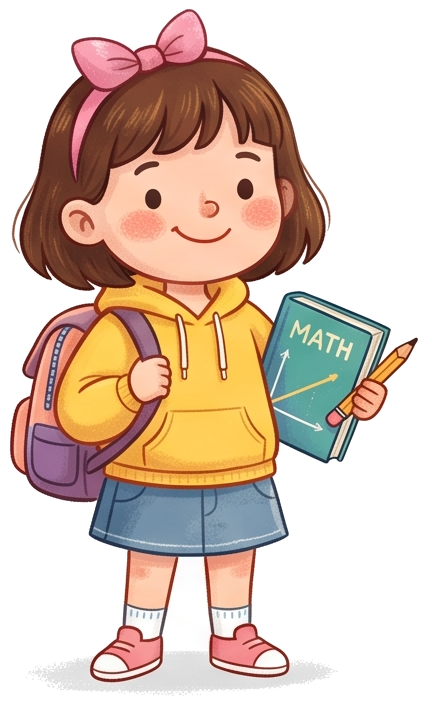
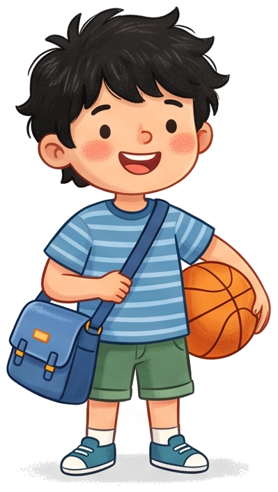
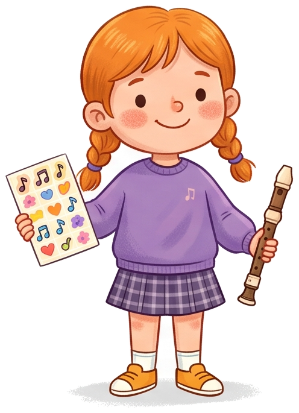

Two newer builds — Binary Numbers and Photosynthesis — are still finishing review.
01 / WATCH
Make the invisible visible.
Equations unfold, diagrams explain, and abstract ideas find their shape.
02 / LISTEN
Every step has a voice.
Narration and captions stay with the lesson, so each idea has room to land.
03 / TRY
Understanding takes practice.
Explore a simulation or answer a question, right where the concept clicks.



02 — THE METHOD BEHIND THE MAGIC
From prompt to possibility.
A thoughtful lesson takes a few steps. EduHarness connects them all. Select a stage to look inside ↓
01 / A PURPOSE FOR EVERY SCENE
Good teaching starts with a clear intention.
The planner turns your topic, audience, and learning goal into a scene-by-scene blueprint. Every scene gets a medium, narration, and a short list of ideas that must be visible.
Learning goalsScene planningShared visual style
LESSON BLUEPRINT Illustrative example
LEARNING GOAL
Explain why a longer lever needs less force.
01Set the sceneMotion
02Build intuitionIllustration
03Show the relationshipAnimation
04Let the learner tryPractice
↺
A feedback loop, not a finish line.
Layout checks and visual review feed targeted repairs. Saved checkpoints let a build pick up where it left off.
RENDER → REVIEW ↩ REFINE
YOUR NEXT GREAT EXPLANATION
What will you bring to life?
A topic, a question, a moment of curiosity. Start there.